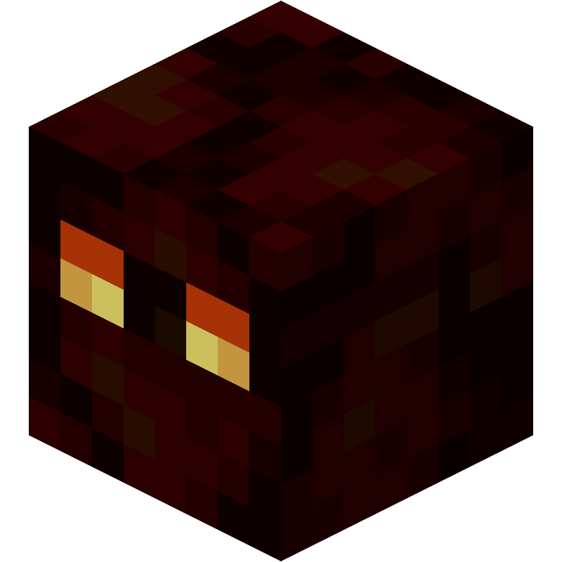

The Molten King
Nether Wastes Boss

| Type | Magma Cube |
|---|---|
| HP | 35 |
| Attack | 7 |
| Defense | 2 |
| Speed | 2 |
| Size | 2×2 |
| Phase 2 | ≤ 50% HP |
| Dimension | Nether |
The Molten King
Nether Wastes biome boss — sovereign of molten rock.
The Molten King is a massive magma cube that erupts, splits, and reabsorbs its own fragments to heal. Every step it takes leaves fire in its wake, steadily consuming the arena and cutting off safe ground.
Abilities
- Magma Eruption: Leaps to a tile near the player, dealing 5 dmg in a 3×3 AoE and leaving a fire ring around the blast zone lasting 2 turns. Telegraphed 1 turn in advance.
- Split (reactive): If hit for 8 or more damage in a single strike, splits once into 2 medium Magma Cubes (15 HP / 4 ATK).
- Lava Trail (passive): Movement leaves fire tiles behind, each lasting 2 turns.
- Absorb: Merges with an adjacent split cube, healing for that cube’s remaining HP.
Phase 2 — “Meltdown”
Triggers at ≤ 50% HP. Lava Trail tiles become permanent. Eruption fire rings are permanent. Absorb range extends to 2 tiles.
Strategy
Kill the halves immediately after a Split before the Molten King can Absorb them to heal. Avoid clustering on the same tiles — Magma Eruption catches the center blast zone for the full 5 dmg.